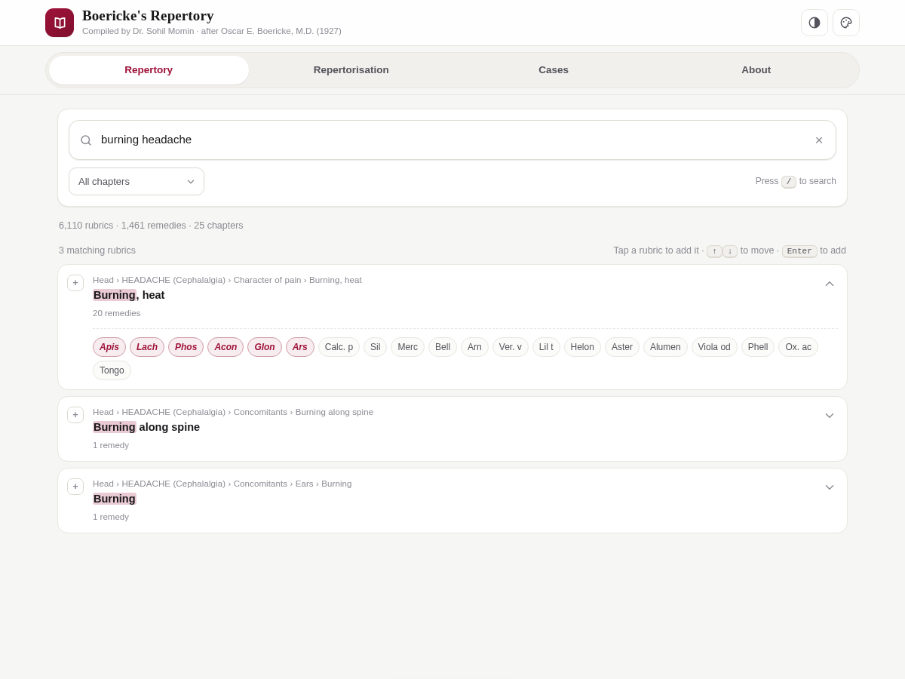
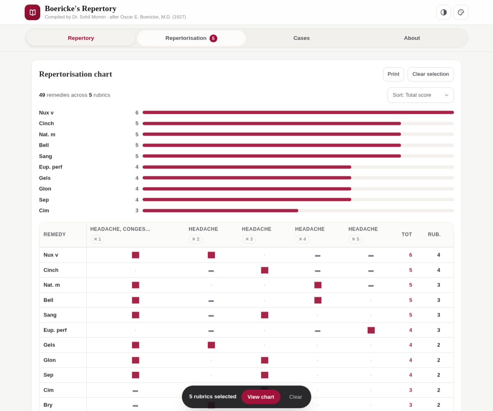

Instant search
Results across 6,110 rubrics by symptom, path or remedy name, with matched terms highlighted and a chapter filter. Full keyboard control: / to focus, arrows to move, Enter to add.
A digital edition · Oscar E. Boericke, M.D. (1927)
Boericke’s Repertory is a free, offline clinical repertory and repertorisation tool that lives in a single HTML file. Six thousand rubrics, fourteen hundred remedies — searchable in the browser, on any device, with nothing to install.
Free & fully offline — nothing to install. The Android .apk is sideload-only (allow installs from unknown sources).


What it does
Boericke’s Repertory brings a printed clinical reference into the browser without losing what makes it useful: fast lookup, graded remedies, and a repertorisation chart you can actually read. No server, no build step, no tracking.
Results across 6,110 rubrics by symptom, path or remedy name, with matched terms highlighted and a chapter filter. Full keyboard control: / to focus, arrows to move, Enter to add.
Tap rubrics to build a chart that scores every remedy across them — italic grade 2 counts two points, plain grade 1 counts one — then ranks by total, rubric count or remedy name.
Tap any remedy inside a rubric to see every rubric that lists it, along with its grade — a fast way to check a remedy’s full clinical picture.
Save patient details, notes and prescription alongside the rubric selection and chart; reload, print, export or import as JSON — entirely on your own device.
Print the repertorisation chart straight from the app — no pop-ups, no extra windows. Everything is sized for a clean sheet of paper.
Modern responsive interface with light, dark and auto themes and five accent colours. One self-contained file: no internet needed after loading, and no tracking of any kind.
How it works
There is no account and no setup. Open the page and the whole repertory is already there.
Type a symptom or a remedy name. Filter by chapter if you like. Matching terms are highlighted inside each rubric so you can see exactly why it surfaced.
Tap a rubric to add it. Selected rubrics gather at the foot of the screen, and every remedy listed under them is scored by grade and ranked by total.
Sort the chart, tap a remedy to trace its full picture, attach patient notes to a case, then print the sheet or export the case as JSON.
From the app
The two screens you will live in: the search list, and the graded repertorisation chart.


Prefer to try it live? The full app is served alongside this page at /play/.
Get started
Three ways in — pick whichever suits how you work.
Open the live app and start searching. It works offline once loaded, and on phone, tablet or desktop.
Grab the single index.html file and open it in any modern browser — that is the whole installation.
Clone the repository, then either serve it or publish your own copy through GitHub Pages.
# clone the repository git clone https://github.com/drsamonline/boericke-repertory.git cd boericke-repertory # open it directly, or serve it locally python3 -m http.server 8000 # then visit http://localhost:8000
To publish your own copy: fork the repo, then enable GitHub Pages under Settings → Pages and deploy from the default branch.
Questions